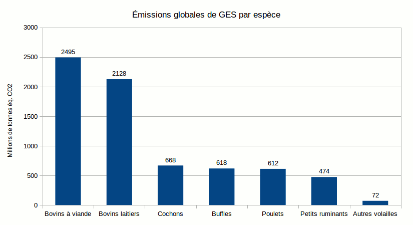
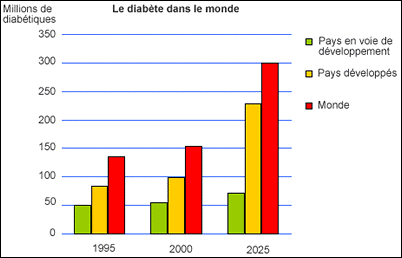

Les problèmes de notre alimentation actuelle et des solutions pour arriver à une alimentation durable
La surconsommation de viande
L’élevage produit 14,5% des gaz à effet de serre (8,8% pour les bovins), soit plus que le secteur des transports. La production de viande est responsable de 7.1 Milliards de tonnes de CO2 et 1Kg de protéines sous forme de viande de boeuf émet 290 Kg de gaz à effet de serre contre moins de 50 pour le porc ou le poulet. La demande en viande n'a fait qu’augmenter au fil du temps. Entre 2005 et 2050, on prévoit une augmentation de plus 73% de la consommation de viande. Pour 1,5 grand bovin de 650 kg, il faut un hectare d’espace. La viande consommable chez un bovin représente 37% de son poids, cela revient à dire que l’on obtient 333 kg de viande bovine par hectare alors qu’avec un hectare, on peut produire jusqu’à 3 tonnes de soja, qui est plus riche en protéines que la viande de boeuf (+50%).
Si on limitait la consommation moyenne de viande bovine à 10 grammes par jour et le reste des autre viandes à 80 grammes par jour, on réduirait de plus d’un tiers les émissions de gaz à effet de serre d’origine agricole et de 8.5% pour les émissions totales. Si cette mesure était appliquée, elle aurait le même effet que supprimer la moitié du trafic routier mondial (d'après Harvard Medical School).
Destruction de plus de 63% de l’Amazonie au profit de l’élevage. Elevage intensif et production de soja en sont les principales causes. En 40 ans, sur les 5,5 millions de km² de superficie de la forêt amazonienne, 800 000 ont été rasés. En moyenne, 6000 km² sont détruits chaque année depuis l’an 2000.
A l'opposé, un végétalien produit 2,5x moins de gaz à effet de serre qu’un citoyen lambda d’après une étude britannique(Scarborough, P. et al., 2014).

L'élevage intensif : un problème éthique ?
L’écrasante majorité des animaux que nous mangeons est entassée dans des cages ou des enclos sans voir la lumière du jour (83% des poulets sont élevés sans accès à l'extérieur, 69% des poules et 99% des lapins sont élevés en cage, 95% des cochons sont élevés en intérieur).
Les élevages les mutilent pour mieux les entasser et faciliter la cohabitation (castration à vif, ablation du bec ou de la queue).
Le taux de mortalité dans ces élevages est plutôt elevé (20% des porcs meurent avant d’avoir été abattus et 25% pour les lapins).
Les énormes besoins des élevages
Les besoins en eau des élevages sont bien plus importants que ceux pour les légumes ou les céréales.
En plus de consommer énormément, les élevages polluent massivement les sols et les nappes phréatiques ou sont responsables de plus de 80% des émissions d’ammoniac (qui provoquent des pluies acides).
Rien que les élevages bretons produisent à eux seuls la même quantité d’excréments que 60 millions d’habitants et qui sont en plus non traités.
L'impact de cette alimentation sur notre santé
L’alimentation centrée sur les produits d’origine animale favorise l’apparition de maladies chroniques comme l’obésité, le diabète, les maladies cardio-vasculaires, cancers et ostéoporose. Cette alimentation est responsable d’au moins autant de cas de maladie que la sous-alimentation et ½ des maladies sont liées à l’alimentation. 1 milliard de personnes sont en surpoids dans le monde.
Entre 1950 et aujourd’hui, nous sommes passés d’une alimentation centrée sur les produits végétaux (pain, céréales, pommes de terre, …) à une alimentation qui tourne autour de la viande, des produits laitiers et d’autres produits gras. Cette alimentation est trop riche en lipides, en sucres rapides et trop pauvre en fibres.
Pour preuve, entre 1980 et 2000, le nombre de personnes atteintes d’un cancer a augmenté de 63%. C’est la première cause de décès en Europe. Un changement d’alimentation aurait le même effet que l'arrêt total du tabac. Ou encore le nombre de diabétiques a été multiplié par 5 entre 1985 et 1998 (30 millions à 143 millions). C'est la 3ème cause de mortalité en France. Les experts ont donné la prévision suivante pour 2025 : il y aura 300 millions de diabétiques dans le monde.
A cause de ces épidémies de maladies chroniques, certains craignent une diminution de l'espérance de vie. Or c’est déjà le cas dans certains comtés aux États-Unis et les chercheurs ne craignent que cette tendance ne se généralise notamment dû au fait que le nombre d’obèses américains ne cesse d’augmenter. En effet, un simple surpoids ferait perdre 3 années de vie alors que l’obésité ferait perdre jusqu’à 14 ans d’espérance de vie.
Le Committee for Responsible Medicine estime que les coûts médicaux attribués aux maladies dues à une mauvaise alimentation sont entre 29 et 61 milliards de dollars annuels.
Si nous changions notre alimentation et notre mode de vie, on pourrait réduire le nombre de cancers de 30 à 40%, 17 à 22% les maladies cardio-vasculaires et 24 à 66% des diabètes seraient évités.

Se nourrir d'insectes : une solution viable ?
L’entomophagie (le fait de se nourrir d’insectes) est déjà une réalité dans plusieurs régions de la planète où la viande est trop rare pour être une source d’alimentation viable. Il est donc logique de se poser la question suivante : pourquoi pas nous ?
Dans un futur proche, il nous sera sûrement nécessaire de nous nourrir d’autres choses que de la viande car les prévisions annoncent 9 milliards d’humains en 2050, or il faudrait alors doubler la production de viande pour subvenir aux besoins d’autant de personnes.
Les insectes représenteraient alors une sérieuse alternative à la viande. Il faut savoir que le taux de protéines de certains insectes atteint 75%, c’est-à-dire plus que la viande ou les végétaux.
Il y a aussi le fait que produire des insectes rejette beaucoup moins de gaz à effet de serre que la production de viande. Produire un kilo de vers de farine entraîne l’émission de 10 à 100 fois moins de gaz à effet de serre que produire un kilo de viande de porc. A poids égal, le cochon produit 8 à 12 fois plus d’ammoniac que les criquets et jusqu’à 50 fois plus que les sauterelles. Le risque de maladie est également réduit dû au fait que les insectes et les Hommes sont trop différentes et donc les maladies auraient donc plus de mal à muter entre les espèces. Il faut aussi prendre en compte le fait que pour 10kg nourriture, on obtient 9kg de viande d’insecte contre 1kg pour du boeuf ou 3kg pour du porc.
Il existe également une très grande diversité d’insectes donc de goûts différents (plus de 1400 espèces consommées).
Le plus gros frein au développement de l’entomophagie est certainement le dégoût des pays occidentaux pour les insectes ou le manque d’informations sur cette pratique ou encore l’habitude de ne manger que de la viande ou du poisson.